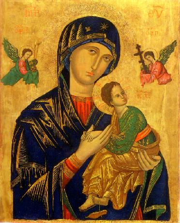

Please say the Memorare every day
for priests who will offer the traditional
Roman Rite Mass for us.

Remember, O most gracious Virgin Mary,
that never was it known that anyone who fled to thy protection,
implored thy help, or sought thy intercession,
was left unaided.
Inspired by this confidence,
I fly unto thee, O Virgin of virgins, my Mother.
To thee do I come, before thee I stand, sinful and sorrowful.
O Mother of the Word Incarnate,
despise not my petitions,
but in thy mercy, hear and answer me.
Amen.